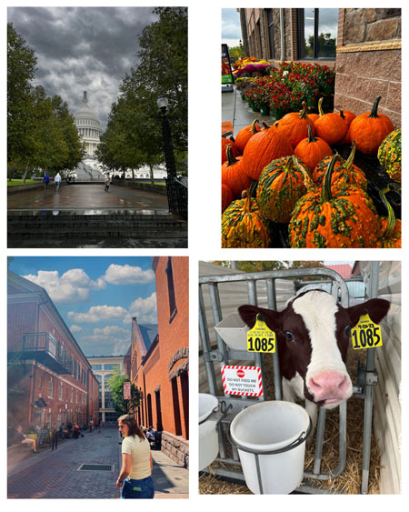

E-portfolio of Alisa Hoverter | |
|
Student at Millersville Universty This photography project was to edit images in photoshop to create a edited noticeable final product. I used images that had contrast or bright colors to create a better visual final product. The images on the right I gave them a fake sky to create more dynamic and contrast in the sky then the original. The pumpkins and cow I changed the colors and vibrancy of the image to make it more appealing to the audience. |
 |
|
©:2023 Alisa L. Hoverter | |